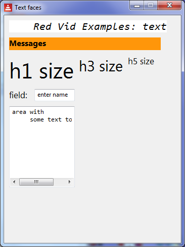

Red by Example - an accessible reference by example
index parse vid series help about links contact
Red VID Example - Text Faces
Red [
needs 'view
file: %text-faces.red
Author: "Mike Parr"
]
view [
size 350x450 ;-- window size
title "Text faces" ;-- window title
t1: text white italic font [name: "Consolas" size: 16 color: black]
" Red Vid Examples: text"
return
mytext: text 300x25 bold orange font-size 12 "Messages"
return
h1 "h1 size"
h3 "h3 size"
h5 "h5 size"
return
h5 "field: " 40x20
;the enter-key event is used here:
name-field: field "enter name" [print ["name-field holds " face/text] ]
return
a1: area white font [name: "Consolas" size: 10 color: black]
{area with
some text to edit
}
130x160 [print "a1 changed"] ;-- do this when changed
return
]

|